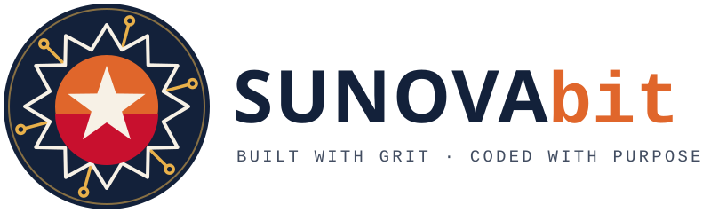
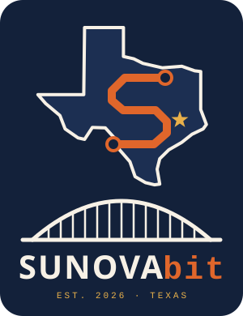

Sunovabit: logo concepts
Three directions, one palette: Navy for trust, Texas sunset orange, Juneteenth red, Gold for excellence, and Cream.

CONCEPT A · RECOMMENDEDJuneteenth Nova
- Lone Star: Texas and the South.
- Nova burst: borrowed from the Juneteenth flag. Juneteenth began in Galveston, Texas on June 19, 1865. "Nova" is also hidden inside Sunovabit's name.
- Circuit traces: the rays plug into circuit-board pads, for the computer kid who grew up tinkering.
- Sunset and red core: a Texas sky, and the sacrifice of those who marched for civil rights.
- The "bit" in the wordmark is set in a code font. It works as an app icon, a favicon, embroidery, and a truck decal.

CONCEPT BCircuit Texas Monogram
- A Texas outline holding an "S" made of circuit traces.
- A gold star marks home. Move it to your hometown.
- The steel arch bridge honors the 1965 march for voting rights across the Edmund Pettus Bridge in Selma: crossing over to something better.
CONCEPT CBuilt with Grit Badge
- A hammer (the hard-work ethic from your parents) crossed with a mouse cursor (technology), over the Lone Star.
- It has the feel of a vintage work-patch, a nod to Southern trade and union badges.
- The motto runs around the edge: Built with Grit · Coded with Purpose. Great for shirts, hats, and stickers.
Next steps: pick a direction, and we'll refine it into a final mark, an app-icon version, and one-color versions. A professional designer can also use these SVGs as a starting brief.